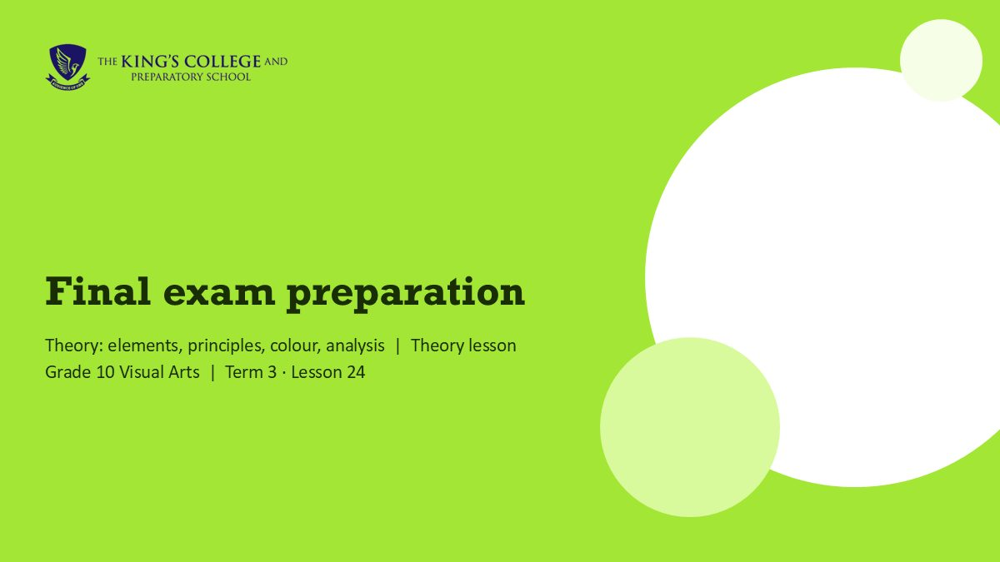

Term 3 · Lesson 24 · Theory lesson
Final exam preparation
Start here
Today I will
- Know what the theory and practical exams cover
- Make a realistic revision timetable for the history eras
- Prepare my contours for the practical exam
If you had only one page to remember the whole of Art History this year, what would you put on it?
Words to Know
| Word | Meaning |
|---|---|
| Revision | Going back over work to learn and remember it before a test or exam. |
| Exam | A formal assessment under set time and conditions. |
| Contour preparation | Planning the main outlines of your exam composition beforehand, as the exam brief allows. |
| Command word | The word in a question that tells you what to do, such as identify, describe or discuss. |
| Spaced practice | Studying a topic in short sessions spread over several days rather than all at once. |
Slides

Notes
What the theory and practical exams cover; study plan for the history eras; preparing contours for the practical exam.
What the exams cover
| Theory exam | Practical exam |
|---|---|
| Art history: the eras from Prehistoric to Rococo, African art and art and power. | A practical piece made under exam conditions, following the exam brief. |
| Visual analysis of a seen or unseen artwork using the four FET parts. | Your prepared contours, used as the exam brief allows. |
| Terms, artists, dates, media and short identify, describe, effect answers. | Skills from this year: tone, proportion, drawing and media handling. |
| Command words: identify, describe, explain, compare, discuss. | Time planning so you finish within the session. |
How to revise art history
- One era at a time: For each era, list its dates, three characteristics and two key works with artist and date.
- Know the works by heart: For each key work: title, artist, date, medium and three visual details you can describe.
- Practise the formula: Write identify, describe, effect sentences for one work per era.
- Spaced practice: Short sessions over several days beat one long night before the exam.
- Test yourself: Use the booklet questions at the end of each chapter and mark them against your notes.
Plan your revision like a composition: the big shapes first, then the details.
Practical
You need: Revision timetable template, History and Theory booklets, exam brief, pencils
Revision timetable and exam contours
- List all the history eras and theory topics you must revise.
- Mark each one green (confident), orange (unsure) or red (weak).
- Fill in the timetable: short sessions, red topics first, with a rest day each week.
- Read the practical exam brief and underline what you must prepare.
- Begin your contour preparation: lightly plan the main outlines of your composition as the brief allows.
- Write down any questions about the exam to ask the teacher.
Final theory and practical exams follow.
Test yourself
- Name the four parts of an FET visual analysis.
- What should you know about each key work for the exam?
- Why is spaced practice better than cramming?
Show answers
1. Describe, Analyse, Interpret and Opinion. 2. Title, artist, date, medium and at least three visual details you can describe. 3. Short sessions over several days help you remember for longer and show which topics are weak while there is still time.
Finished early?
Make a revision card you can test yourself on.
- Choose one art history era you rated orange or red.
- On a card or VJ page, write its dates and three characteristics.
- Add one key work with its title, artist, date and medium.
- Write one identify, describe, effect sentence about the work.